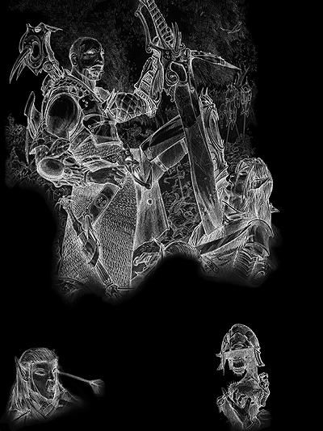

|
“Good an evil are not philosophical concepts in the D&D game. They are the forces that define the cosmos.”
�D《龙与地下城玩家手册》

“邪恶”用在这里也许有些过分。在游戏和本书中，这个词是指带着毁灭和死亡气息的黑暗力量，无时无刻地阻止人们行善，诱惑他们作恶。邪恶是污秽，腐朽，不可救药的黑暗。这可不是什么调皮捣蛋，脾气暴躁或是遭人误解。邪恶是黑心，自私，残酷，嗜血和狠毒的。
游戏中的邪恶
在进行龙与地下城游戏时，有两种方式来看待邪恶，客观看待邪恶或是主观看待邪恶。其中第二种方式会给游戏带来很多变化，请小心使用。
客观看待邪恶
这是进行龙与地下城游戏时最简单最直接的观点，也是本书的重点。从这个角度上看，邪恶可以从客观判定。生物，行为以及物品的邪恶本质与旁观者的看法无关。他们或者邪恶，或者不是。这种清晰的判断使得“Holy Smite”一类的法术可以得到施展。而从相反的角度上讲，这种客观判断邪恶的方式之所以存在也是由于“侦测邪恶”这个法术的出现。想要知道谁是“邪恶”？不用去研究哲学书籍。只需要看看谁会被牧师的“Holy Smite”击中就可以了，那些生物即是邪恶。他们的行为，一般而言，就是邪恶的行为。如果您的角色仍然不那么确定，他可以召唤天界生物或是施展“Commune”这个法术。诸神总是乐于回答此类问题的。
《龙与地下城玩家手册》中提到，“‘Evil’ implies hurting, oppressing, and killing others. Some evil creatures simply have no compassion for others and kill without qualm if doing so is convenient. Others actively pursue evil, killing for sport or out of duty to some evil deity or master.”
这种客观看待邪恶的方式在角色扮演游戏中运作得很流畅，邪恶是玩家角色可以一眼认清的，他们清楚自己必须与之战斗。客观看待邪恶可以避免玩家（以及他们的角色）陷入伦理道德上的窘境，尤其是这种窘境会大大延缓游戏节奏的时候。如果您想展开一场消灭豺狼人的战役，您肯定不希望整个战役陷入诸如“杀死豺狼人是善良还是邪恶”这种无谓的争论。
主观看待邪恶（规则变化）
使用这第二种观点，邪恶的判定取决与旁观者的态度。这不是一般龙与地下城游戏所采取的方式，但这和真实世界一样。这种规则变化会使游戏，或者起码是“邪恶” 产生戏剧性的变化。使用这种主观看待邪恶的观点时，邪恶不再是玩家角色可以一眼认清的了，而取决与每一个人的看法。虽然说，一个群体，譬如某个社会很可能有着相似的善恶取向，但也许，另一个群体却会持着截然相反的看法。当然，即使客观地看待邪恶，各个群体间也同样可能会持着矛盾的世界观，但是，究竟其中一方可以简单地证明自己的正义性。
在这样一个世界里，某个神祉可能会制定自己的戒律来判定善恶。而其他神祉则可能有着不同，甚至是相反的教义。某个圣武士可能会用“邪恶的野蛮人”来形容高山对面群落，并最终不远万里与之作战。那么她也很可能会发现，自己被称为“邪恶的入侵者”，并且是在与其他神祉的圣武士交战。
您如果选择使用这种观点看待邪恶，那么也同时必须做出一些游戏规则上的变化。譬如，在这样一个世界里，“侦测邪恶”这个法术如何运作？当两个持不同观点的圣武士在战场上兵戎相见，他们可以互相施展“破邪斩”么？最简单的处理方法就是去掉诸如“侦测邪恶”这种法术，因为它毫无意义。将法术中关于善良和邪恶的限制去掉（也就是说，任何角色都可以施展这些法术），并忽略一切武器上附加的神圣或是邪恶伤害。要知道，判定角色施展“侦测邪恶”后的结果可是又累又不讨好的差使，而关于“谁会被圣武士的圣剑伤害”或是“谁会被牧师的‘Holy Smite’击中”的争论将会永无止境。
定义邪恶
当然，即使您采用客观角度看待邪恶，邪恶人物们也通常不会承认自己的邪恶本质，他们会宣称自己其实遭人误解或是简单地用谎言来掩盖。即使是最出格的凶手也可以用自己的信仰，神祉或是扭曲的世界观来为自己的行为辩护。
一个凶手可能会杀死他认为是孱弱而不适于活在世上的儿童，另一个则可能会杀死那些他认为长大后会变得邪恶的孩子。也许，这个凶手曾经得到过一个预示梦，告诉他邪恶这个孩童间滋长。
我们把范围扩大一些，一个牧师可能会认为，为了更好地服侍他邪恶的神祉，把整个村庄从地表上抹掉，把全体村民作为祭品是个不错的主意。这邪恶么？是的。那么这个牧师认为这种行为邪恶么？不，他只不过认为这是忠心和信仰的体现。或者也许他也知道这行为很邪恶，但只是不在乎而已。
一个独裁者也许会下令消灭某个善良种族，仅仅是由于她认为他们邪恶。她也许会想统治世界，用剑和火为人民带来和平，也许这个暴君认为世界在她的指导下会变得更加美好，但这种想法可不证明她就是个善人。
意图和因果
那么，在一个邪恶由客观判定的世界里，行为的意图在判定善恶上就毫无意义了吗？只是一定程度上而已。
考虑一下这个例子，圣武士泽法斯为了躲避枭头熊的攻击，爬上一座松动的石山，导致山体滑坡掩埋了枭头熊以及山脚下一座充满平民的茅屋。那么泽法斯会因此被判定为邪恶的凶手并丧失他“守序善良”的阵营么？不，也许泽法斯仍然会有罪恶感，他也许会为了无意中犯下的错误而尽力补偿，但这也只是他无意中犯下的错误而已。
但假如泽法斯的队友淑琳对他大喊：“泽法斯！别往那里爬！你会触发山体滑坡砸坏山下的茅屋！”但泽法斯还是做了。那么现在，这行为邪恶么？很可能。泽法斯或者是把平民的生命当儿戏，或者是过分高估了自己的攀爬技术。从这个角度讲，泽法斯也许并非真正意义上的凶手，但应该被剥夺圣武士的能力，直到有人对他施展“赎罪术”或是他自己用什么其他方法补偿为止。
如果泽法斯清楚地知道山体有滑坡的危险，但在枭头熊的威胁下仍然坚持攀爬，这行为就是邪恶的。在善恶有如黑白般分明的世界里，为了自己伤害无辜是邪恶，为了大众利益牺牲个人是善良。这个标准有点高，但事实就是这个样子。
在前面的文章中，定义了三个级别的意图：无意而为，粗心大意和有意作恶。在某些时候，这些仍然不足以判定意图是否邪恶。那么您就必须参照事情的因果进行判定。
一个疯子在市镇的井水里下毒，因为他（错误地）相信镇民其实都是恶魔。这邪恶么？是的。一个“Glabrezu”恶魔使一名善良角色相信，镇民事实上都是必须被消灭的恶魔，所以这个角色就在市镇的井水里下毒。现在这邪恶么？也许不，起码，参考事情的前因后果后不能判定为邪恶。当然，一名善良角色也不应该在事情没有完全确定的时候展开影响如此大的行动，除非他清楚自己已经没有其他的选择。消灭一个邪恶的城镇从来不是一个好点子，因为也许镇子里至少也会有着一两个好人。
现在让我们把情况变得更复杂一些。另一个角色知道这位善良角色要往井水中下毒。那么杀死这名善良角色是邪恶行为么？不。这次，意图同样并非邪恶，而事情的因果使这个选择成为了较为善良的一个。角色的另一个选择，在一场大屠杀发生的时候袖手旁观相比而言则显得更加邪恶。
灰色区域
即使在最为黑白分明的世界里，灰色区域也仍然存在，考虑一下这个例子：一场灾难性的疾病降临在瓦露村，治疗这场疾病需要瓦露森林中的神木木心，瓦露森林里的督依德教徒则认为神木不容玷污。他们决定阻止前来的村民。那么哪一方是邪恶的呢？也许都不是。
并非所有争斗都基于善恶冲突。两个善良国度之间也有可能爆发战争，就如同邪恶王国间经常彼此作战一样。在一场战争中，您的角色杀死了一名善良角色，这邪恶么？这显然属于灰色区域，一般而言，适度的出轨应该被允许。但对伦理道德要求严格的角色应该仔细审查战争的动机，尽量少地造成伤害，如果可能，他应当会寻找其他解决方法。
邪恶行为
检视一下这些邪恶的行为不仅仅可以定义邪恶，还可以深入了解邪恶的本质。下面的内容可不只是张对抗着善良的清单，从中还能发现很多邪恶的点子，阴谋诡计，邪恶的动机和邪恶的人格。
谎言
花言巧语和迷惑人的假象可以把敌人带入陷阱，也是恶人最常用的武器。一个巧妙的谎言可以使一支军队改道，转变整个城市的立场，或者，让冒险者打开地城中那扇错误的门。
有些骗子说谎是情不自禁的，他们不骗人就觉得难受。另一些则喜欢看别人犯傻，如果他能让对手相信自己的谎话，他就觉得自己比对方优越（至少在他自己眼中是这样的）。
攻于心计的恶人常常有着高超的“唬骗”技能来强化自己的谎言。相对的，这些家伙也对谎言相当警惕，所以也常常会在“观言察色”上下大功夫。
谎言并不一定是邪恶的行为，但邪恶的行为却常常伴随着谎言。谎言是如此容易地被误用，以至于大部分骑士和善良宗教的戒律中都明确禁止说谎。
诡谋
诡谋是通过破坏规则来获取个人利益。当恶人心中开始盘算诡谋时，可不是在游戏。他们在文书中设置圈套；操纵政府官员让罪犯逍遥法外；在敌人的武器装备上做手脚，使它们不能发挥作用。这些阴谋家会通过威胁议员家人的性命来实施自己的计划；在角斗士身上投以重注，并用法术和毒药来确保自己的收益。
诡谋是多种多样的。比如说，恶人可能会把自己的敌人带入自相残杀的陷阱，或是勾引对手的恋人。他们会在一场预先设计好的竞技中挑战对手，或者签订根本没打算遵守的协议。
行窃
小孩子都知道，偷东西是不好的。恶人们却通常觉得偷窃是获取的最佳途径。邪恶的人物只会在无法得手的情况下付钱。
一名邪恶人物会需要不行窃的理由。通常是害怕被捉，也有时是不想惹恼物品的主人。比如说，一名暗黑精灵的牧师会付钱给一名游荡者来购买魔法物品。牧师并非不想从游荡者那里窃取物品，但她还是选择付钱来使游荡者继续为她工作。
背叛
背叛通常是个精心的谎言，但伤害却更深。这种行为包括先骗取对方的信任，然后再利用这种信任。通常而言，恶人会设法接近对手以探知并泄漏他们的秘密，从他们那里窃取物品，或是找机会在背后捅他们一刀。
背叛不见得是有意的，或者说，起码在一开始不见得是有意的。有时，人们会因为抵御不住诱惑而走上背叛者的道路。孩子可以背叛父母，恋人可以背叛恋人，朋友可以背叛朋友，或是更复杂一些，国君可以背叛他的人民，丈夫可以背叛他的妻子，个人可以背叛他的种族。事实上，任何两个生物之间的联系都是背叛的基础。
谋杀
杀戮是人们能犯下的最大罪过。谋杀是由于邪恶的理由，比如偷窃，个人利益，或者是单纯的快乐而杀害智能生物。
一名英雄可能会杀死在巢穴中的绿龙，但这并非谋杀。在一个邪恶由客观判定的幻想世界中，杀死邪恶生物会阻止它造成进一步的破坏，那么这就不能被称为邪恶行为。即使是为了个人利益杀死邪恶生物也不能被称为邪恶行为（虽然这也不是正义的行径），因为这究竟在客观上保护了无辜群众的利益。但这种判断，只能用在杀死极端邪恶的生物，比如彩色龙的时候。
邪恶生物喜欢杀戮。这是展现他们力量的机会，也是他们向世界宣告他们可以为所欲为的机会。
对于某些邪恶的，尤其是那些有着丑恶外表的生物，杀戮是他们心中的渴望。有些生物单纯地憎恨生命，也憎恨一切活着的生物，他们带来死亡，或是亡灵，在任何时候都想要结束别人的生命。这种生物通常（虽然不是一定）是亡灵。
复仇
复仇是一股强大的动力，这未见得是邪恶的行为，但邪恶常常将复仇扭曲成“不惜一切代价地报复”，没有限制的复仇可以迅速把人带上邪恶的道路。
例如：假设有人从一名寇涛巫师手中偷走了他珍贵的魔法戒指。于是巫师杀进一座灰矮人的要塞，用其中的一颗水晶球确定盗贼的位置，然后突然传送到盗贼身边（一座拥挤的酒馆里）开始乱丢闪电。盗贼侥幸地逃了出去，并使用“回避侦测”来防止这种事情再次发生。于是巫师用魔法变形成不那么引人注目的形态，并开始追捕盗贼的家人，折磨他们来确定盗贼的位置。这个例子就描述了复仇的邪恶面。
谅解和慈悲在邪恶生物心中没有任何地位。若果有人胆敢迫害他们，或者仅仅是他们觉得有人在迫害他们，报复是他们唯一的答案。
崇拜邪神
敬拜黑暗力量的牧师和他们服侍的神祉一样邪恶。在维克纳，厄瑞斯努或是蜘蛛神后的名义下，这些邪恶的代言人献上活祭，举行亵渎的仪式，阴谋策划着增强他们的守护神。有些时候，这些邪恶的教派表现得非常直接：靠绑架来举行活祭，靠偷窃来资助神庙，甚至有些教义就要求信徒去谋杀，去强暴。但也有些时候，他们的诡计会比一般恶人还要精明难测。
例如，一名炼狱的领主好比说，毕来尔，可能会指示他的信徒（通过梦境，幻境或是“通神术”）专门迫害村中有某一年龄段男孩的家庭。这样，二十年后，当这些孩子本应已经长大成人的时候，毕来尔再派出自己的恐纳魔去盗窃教堂中某件珍贵的神器。由于缺乏足够的成年人来阻止他的隐没，这个恐纳魔很可能会成功。
邪神的神庙常常隐蔽在常人不会想到的秘密地点。诸如旧谷仓地下，废弃的仓库，或是某人家的后院，事实上，哪里都可能存在邪恶的神庙。更大，更持久的神殿则常常远离人烟，或者起码说是远离善良文明。这样的神殿通常是一座在原野中孤独矗立着的铁塔或是石塔，上面雕刻着令人毛骨悚然的花纹并装饰着可怕的雕塑。其他的邪恶神殿则可能坐落在邪恶城镇的中央。
创造亡灵
不死的尸体，嘲笑着生命和纯洁，是邪恶最理想的象征。创造亡灵是极大的罪恶，即使创造者的目的是为了善良。亡灵会为带来负能量，将整个世界变得更加黑暗邪恶。
很多文明都会将墓地牢牢保卫在高墙之内，甚至派出守卫巡逻以防止有人盗尸。盗尸通常是件好差使，因为亡灵巫师通常会为了他们的原料出上好价钱。当然，战场也是盗尸贼理想的选择～如果亡灵巫师没有自己去寻找尸体的话。
施展邪恶法术
邪恶法术可能会用于创造亡灵，造成难以想象的痛苦，迫害他人灵魂，或是什么其他类似的效果。
有些时候，并非邪恶的施法者也会施展几道邪恶法术，他们的目的也许并非邪恶。但邪恶法术却是如此容易让人滑向残暴和堕落的深渊，尤其是那些需要损耗的邪恶法术（参见本书第六章，邪恶法术）甚至会破坏施法者本人的精神和肉体。
迫害他人灵魂
伤害他人肉体有可能是出于善良的目的，但迫害他人灵魂则是完全的邪恶行为。只有最邪恶的家伙才会想要伤害这种永恒的存在。一般生物最多杀死敌人，相信他们已经在来世受到了公正的审判。但邪恶的生物则喜欢活捉敌人，把他们折磨至死，更邪恶的则折磨敌人的灵魂，不允许他们品尝死亡的平静。还有些家伙甚至用邪恶法术消灭对手的灵魂，让他们永远消失在这个世上。
签订下界誓约
俗话说，人以类聚，物以群分，与魔鬼和恶魔签订契约的家伙多数自己也是邪恶生物。下界生物是邪恶最终极的表现，或是文雅一点地说，是邪恶的化身。消灭下界生物通常是正义的行径，而召唤或是帮助他们的家伙则清晰地表明着自己邪恶的立场。
有些时候，施法者可能会召唤下界生物来帮助他完成某些任务，这是邪恶的行径，但还不那么糟糕。还有些人崇拜恶魔或是魔鬼，把他们看作强有力的盟友，这些人为了自己的目的与恶魔或魔鬼建立联盟，或是为他们服务。更有甚者，把自己的灵魂出卖给下界生物以寻求力量或是支持。人人都知道与下界生物交易的风险，但对力量的渴望有时会难以克服。下界生物通常都有着强大的力量，永恒的生命，以及对欺骗和背叛的强烈喜好。所以，那些与要求魔鬼帮助的家伙最终都会发现自己谋害了自己，这并不让人感到惊讶。 |